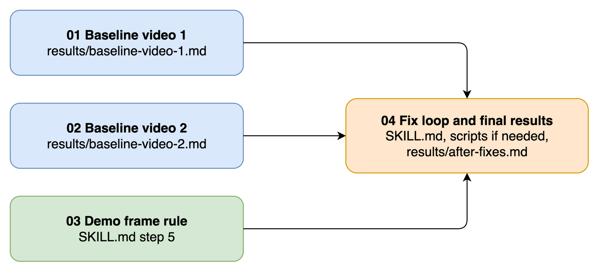

Tasks 01, 02 and 03 can run in parallel. Each owns different files. The baseline tasks run an export of commit b77c7c0, so task 03 can change SKILL.md at the same time.

| Task | Outcome | Main files | Depends on |
|---|---|---|---|
| 01 Baseline video 1 | Two blind runs and judge tables for the Tesena recording | results/baseline-video-1.md | None |
| 02 Baseline video 2 | Two blind runs and judge tables for the OpenRewrite recording | results/baseline-video-2.md | None |
| 03 Demo frame rule | Review drops IDE, terminal and browser frames | SKILL.md step 5 | None |
| 04 Fix loop and final results | Fixes from the error lists, re-runs of both videos, final table | SKILL.md, scripts and tests if needed, results/after-fixes.md, CLAUDE.md, README.md | 01, 02, 03 |
results/ is in this change folder.
## Run 1 Crop: W:H:X:Y | Segments: N | Candidates: N | Exported: N Crop check: pass or fail, with reason | Reference page | Status | PNG or candidate | Error step | |---|---|---|---| | 5 | found | 0005_00-03-12.png | | | 18 | rule conflict: build step | #21 | | | 23 | review error | #40 | review | | PNG with no reference page | Class | |---|---| | 0001_00-00-04.png | host slide or extra | Totals: found, missed, not shown, rule conflict, extra